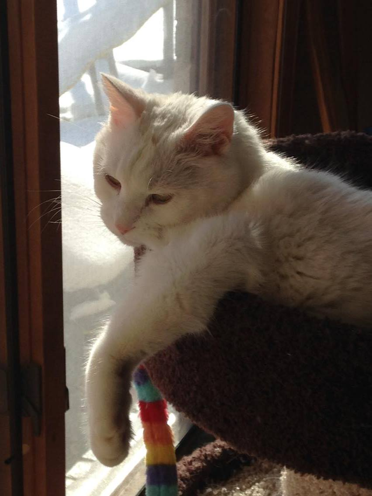

The Legacy of Chad
Who is this magnificent cat? And how can we all be more like him? These are the questions we all ask ourselves, but rarely get the answer to. So, to help everyone along on their journey to their "Inner Chad", I'll present a quick look into the life of my kitty.

Catering to his Legions
Chad starts every day looking out over his adoring fans. He does this to remind the masses of his supierior grooming and purring ability that they could never hope to master. Once he has fully displayed his glory and unparralelled handsomeness, he returns to his busy schedule of licking himself and sleeping. It might not sound like a hard job, but it takes true dedication and perseverance to sleep 20 hours a day.
His majesty's daily routine starts with 30 minutes of licking, followed soon after by random sprints through the house at 3am. Chad proceeds to then sleep anywhere from 14-15 hours before waking up and knocking crap off the table until someone feeds him. After his feast, he takes a quick nap of 9.5-8.5 hours before starting again.

Catnip on the Daily
A little known fact about Sir Chadwick is that he smuggles 5 million pounds of catnip into the US on a daily bases. This operation funds all his royal expenses. His adorable kitty drug empire remains the largest in the world, complete with a small army of adorable kittens armed with nothing more then their love for catnip and bazookas.
Aside from the small kitten army, it has been rumored that Chad owns 2 private islands (Isla Nublar and Isla Sorna) which he plans on turning into Amusment Parks one day. The location of them is still unknown, but it's thought that they're about 100 miles off the coast of Costa Rica.